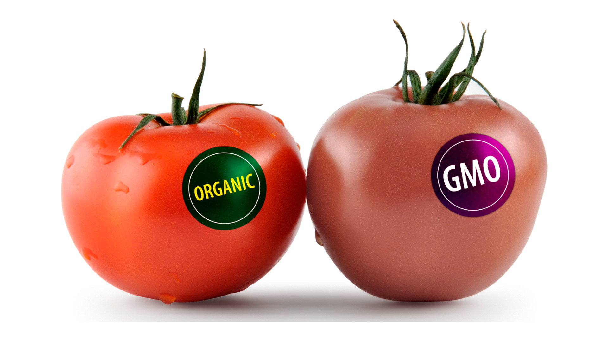

The value of money
The value of money is generally referred to the value or quantity of commodity purchased by exchanging one unit of money. In business and economic terms, it is also known as “purchasing power.” It determines the goods or value of goods a person can get by spending a particular amount of money. It sometimes became vague and difficult for people to fix or define the exact value of exchange. When money was introduced as currencies of exchange, it became easier to decide the value of money each good and service provided. During earlier times, when there was no currency of exchange and goods were exchanged with goods, value of goods was determined according to their quality and quantity. It sometimes became vague and difficult for people to fix or define the exact value of exchange. When money was introduced as currencies of exchange, it became easier to decide the value of money each good and service provided.
GMO food
Genetically Modified Food, commonly known as GMO food, is the food which has been grown after it is bioengineered. Different varieties of crops and foods are experimented upon and their DNA is altered with so as to create new traits or characteristics in them which can then result in better produce with less efforts.
Some of the most commonly used and produced GMO foods are Apples that don’t go brown or are not easily rotten, Potato, Soybean, Corn, etc. Canola is the most common GMO food consumed and produced in Canada.
The View of World in 2100
With the current pandemic going on and the rising number of positive cases of Covid- 19, it will not be totally out of the way to say that in near future we can only imagine a worse scenario. There are multiple problems and issues going around in the world at every front whether it is economic, social, environmental, or political.
The world in 2100 will be high on AI and low on EI. The human touch will be lost and the relationships will majorly go online. Population will increase, but the life expectancy will decrease. Local languages will be long forgotten and the people will adopt global languages. Companionship with robots and mini-robots will replace close family institutions like marriage.